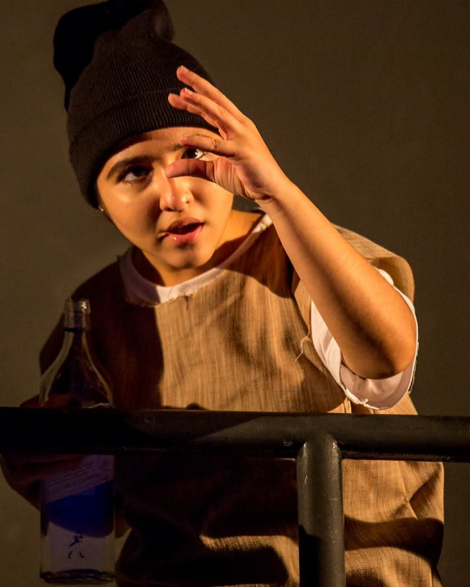

Think Like Birbal
Counting the Crows, The Line Story and other problem-solving tales invite listeners to pause, think and compare ideas.
Explore storytelling, StoryPlays, destination stories, festival tales and audience participation. Find a spark for your next experience.
Watch TokTales on YouTube
From Gauraangi’s stage journey
Counting the Crows, The Line Story and other problem-solving tales invite listeners to pause, think and compare ideas.
A character-driven StoryPlay combining storytelling and performance. Discuss how a screening or live programme can be shaped around your audience.
Legends, local voices, heritage and culture help audiences connect with the places they visit.
Discover the meaning behind celebrations through engaging cultural storytelling.
Folktales and legends from different cultures open new doors for families and young audiences.
Discuss StoryPlay screenings for suitable school auditoriums, cinemas and community venues, with audience conversations woven into the experience.
TokTales artwork, alongside the film and stage journey of its founder.
6 items shown
Visit the YouTube channel for stories to watch and share.
Tell us who you want to reach, what you want them to discover, and the experience you have in mind.
Let’s create your story